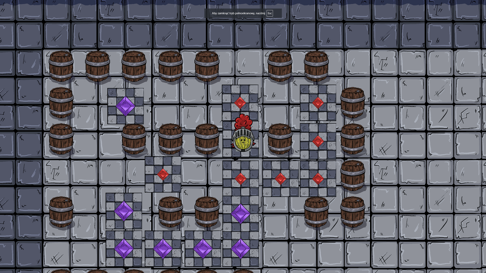
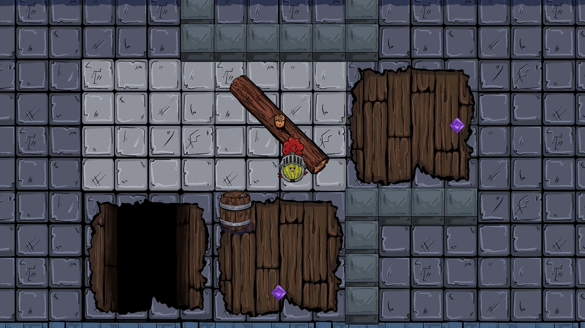

Project Description
This game was developed during a 48-hour Game Jam, focusing on top-down 2D puzzle mechanics. The core gameplay revolves around environmental puzzles, where changing the position of certain elements alters the layout of the level, requiring players to think strategically to progress. A total of nine puzzle levels were designed. The project also features fully integrated custom artwork, created specifically for the game by a graphic artist. In addition to visuals, I implemented sound effects and music using FMOD.
Gallery


Links
Itch.io game page: tojak.itch.io/melon-quest